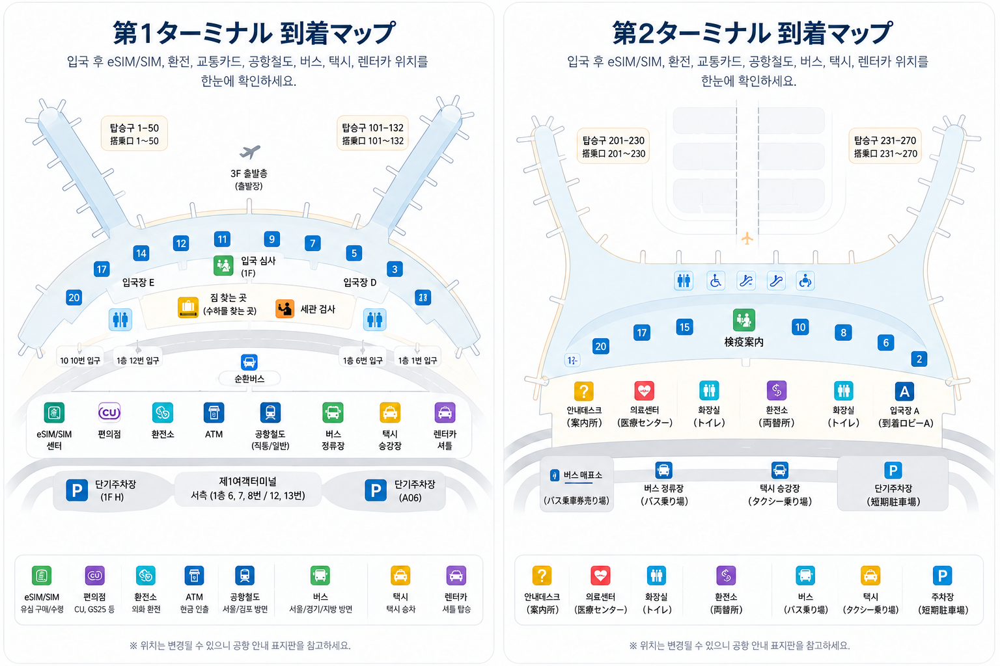

韓国に入国する場合
この便が最終便で韓国に入国するなら、「Arrivals」または「Immigration」の案内表示に従ってください。通常は、最初に入国審査、次に預け荷物の受取、その後に税関を通り、一般到着ロビーへ出ます。
入国審査手荷物受取税関到着ロビー
仁川空港への到着は、見るべき案内表示が分かっていればそれほど難しくありません。韓国に入国する場合、通常は「Arrivals（到着）」→ 入国審査 → 手荷物受取 → 税関 → 一般到着ロビーの順に進みます。
別の便へ乗り継ぐ場合は、この順序にそのまま従わないでください。「Transfer」または「Connecting Flights」の案内表示と、自分の旅程に合った指示に従います。

利用ターミナルは変更されることがあり、特にコードシェア便では注意が必要です。保存した航空会社一覧より、eチケットと空港公式のリアルタイム到着便検索を確認するほうが確実です。
この便が最終便で韓国に入国するなら、「Arrivals」または「Immigration」の案内表示に従ってください。通常は、最初に入国審査、次に預け荷物の受取、その後に税関を通り、一般到着ロビーへ出ます。
入国審査手荷物受取税関到着ロビー
仁川空港で乗り継ぐだけなら、一般の到着ルートへそのまま進まず、「Transfer」または「Connecting Flights」の案内表示に従ってください。乗り継ぎ方法は、航空会社、ターミナル、預け荷物が次の便まで通しで運ばれるかによって変わります。
分からないことがある場合は、すべての乗り継ぎで韓国の入国審査が必要だと決めつけず、航空会社の乗り継ぎ案内を確認してください。
韓国に入国する旅行者の場合、流れ自体はシンプルです。ゲートやターミナルによって歩く距離は変わりますが、主な手続きの順番は同じです。

機内を降りたら、「Arrivals」または「Immigration」の案内表示に従います。「Transfer」や「Connecting Flights」は別の手続きへ進む表示なので、別の便へ乗り継ぐ場合にだけ従ってください。
パスポートと、自分の渡航条件に必要な入国書類を用意しておきましょう。必要条件はパスポート、ビザ、在留資格などによって同じではありません。他の旅行者のチェックリストをそのまま真似せず、出発前に韓国の公式案内を確認してください。
現在、一時的なK-ETA免除措置の対象となっている国については、免除期間が2026年12月31日まで延長されています。K-ETAが免除されているからといって、入国申告まで自動的に免除されるわけではありません。
有効なK-ETAを持っている旅行者は、入国申告が免除されます。一方、一時的なK-ETA免除を利用する旅行者は、渡航資格によっては電子入国申告書の提出が必要になる場合があります。
公式の電子入国申告書は無料で、韓国到着の3日前から提出できます。公式サイトには、自分が提出対象かどうかを確認できる案内機能もあります。
公式電子入国申告書サイトでは料金はかかりません。韓国の入国カードを販売すると称するサイトに、支払い情報を入力しないでください。
入国審査を終えたら、空港の案内表示で自分の便に割り当てられた手荷物受取レーンを確認し、預け荷物を受け取ってから税関へ進みます。
スーツケースが出てこない場合は、まず手荷物受取レーンがまだ自分の便に割り当てられているか確認してください。本当に見つからない、または破損している場合は、手荷物受取エリアにいるうちに航空会社または手荷物サービスカウンターへ相談してください。チェックイン時の手荷物タグと便情報も手元に用意しておきましょう。
荷物を受け取ったら、一般到着ロビーへ出る前に、Customsの案内表示に従って税関へ進みます。申告が必要かどうかは、国籍だけではなく、韓国へ何を持ち込むかで決まります。
税関申告書の記入は必要ですか？
申告するものがなければ、税関申告書を記入する必要はありません。空港の表示に従い、申告するものがない人の通路（Nothing to Declare）へ進んでください。ただし、この場合も税関職員が荷物を検査することはあります。
申告が必要な品物がある場合は、申告書を記入し、申告するものがある人の通路（Goods to Declare）へ進みます。
到着前に何を確認すればよいですか？
購入品・贈り物：旅行者が持ち込む課税対象品の一般的な免税枠はUS$800です。この金額を超える品物は、申告が必要になることがあります。商用の品物や見本には別の規則があります。
現金・支払手段：合計額がUS$10,000相当を超える場合は、税関への申告が必要になることがあります。外貨、韓国ウォン、申告対象となる小切手などが含まれます。
食品・農産物：肉、ジャーキー、ソーセージ、乳製品、卵、生鮮果物、植物、種子は、検疫上の制限を受けることがあります。密封されているだけで持ち込みが認められるわけではありません。
医薬品・規制対象品：規制成分を含む薬など、一部の医薬品には追加の確認や事前許可が必要です。税関申告は輸入許可の代わりにはなりません。
衣類、ノートパソコン、カメラはどうなりますか？
普段使っている身の回り品が、すべて新たな購入品として扱われるわけではありません。ただし、高額な機材や海外で購入した品物の扱いは、価格、用途、韓国出国時に再び持ち出す予定かどうかによって変わる場合があります。
他国で購入した高額品を持って韓国を短期間訪れる場合は、渡航前に韓国関税庁へ一時輸入の要件を確認してください。帰国時に持ち出す予定だからといって、それだけで免税になるとは限りません。
申告はどのように行いますか？
紙の申告書、または韓国関税庁の公式モバイル申告サービスを利用できます。確認を求められたときに提示できるよう、レシート、関係書類、必要な許可書を用意しておきましょう。
申告や検疫が必要か判断できない品物がある場合は、税関エリアを出る前に税関職員または検疫担当者へ確認してください。
入国審査に使う電子入国申告書（e-Arrival Card）と税関申告は別の手続きです。どちらか一方を済ませても、もう一方の代わりにはなりません。
公式案内
処方薬を韓国へ持ち込むとき
処方薬を継続して使っている場合は、出発前に韓国への持ち込み規則を確認してください。自国で合法的に処方された薬でも、それだけで韓国への持ち込みが認められるわけではありません。
普段使っている処方薬は持ち込めますか？
韓国関税庁は、個人使用の医薬品について、6瓶または用法に基づく3か月分までを通関の目安として案内しています。これは一般的な税関の基準であり、すべての薬の持ち込みを認めるものではありません。成分、数量、輸入制限も確認が必要です。
3か月分を超える薬が必要な場合は？
韓国に1学期間滞在する場合、海外で働く場合、持病の治療を続ける場合でも、処方箋があるだけで6か月分の薬を持ち込めるとは考えないでください。
出発前に韓国関税庁へ問い合わせてください。有効成分、含量、1日の使用量、持ち込む総量、滞在予定期間を伝え、追加の輸入手続きや要件免除の手続きが必要か確認します。
事前許可が必要な処方薬はありますか？
あります。韓国法で麻薬・向精神薬に分類される成分を含む医薬品は、別途確認が必要です。一部のADHD治療薬、睡眠薬、抗不安薬、処方鎮痛薬などが該当する場合があります。
ブランド名だけでなく、有効成分を確認してください。韓国で規制対象となる薬の場合は、渡航前に韓国食品医薬品安全処（MFDS）から必要な許可を取得してください。
医師の処方箋や税関申告は、MFDSの許可の代わりにはなりません。
どのような書類を準備すればよいですか？
できるだけ、表示のある元の包装のまま薬を保管してください。有効な処方箋と、患者名、薬の一般名、処方された用量、数量、治療理由を記載した医師の書類を用意します。
MFDSの許可が必要な場合は、発行された許可書を携帯し、記載された数量と条件を守ってください。
注射薬や冷蔵保存が必要な薬は、航空会社の運送条件と薬の保管方法も出発前に確認してください。
税関で薬について聞かれたら？
自分の治療に使う薬であることを説明し、処方箋、医師の書類、必要な許可書を提示してください。
申告が必要か、持ち込みが認められているか分からない場合は、税関エリアを出る前に税関職員へ確認してください。規制対象の薬は、申告するだけで合法的に持ち込めるようになるわけではありません。
許可が必要か分からないまま到着を迎えないでください。適用される規則上、その薬を韓国へ持ち込めない場合は、渡航前に処方を担当する医療者と相談し、適切な治療と薬の確保の計画を立ててください。
公式の要件を確認
MFDSの許可が必要な薬は、出発日まで十分な余裕を持って申請し、許可が発行されたことを確認してください。公式オンラインサービスで申請状況を確認できます。
税関を通って一般到着ロビーに出れば、入国手続きの部分は完了です。
市内へ向かう前に、モバイルデータの確認、宿泊先の韓国語情報の保存、予備の支払い手段、宿泊先までの移動方法を整える必要があるかもしれません。旅行開始直後のこうした実用的な準備は、別ページの仁川空港 到着ロビーガイドでまとめています。
ターミナルごとの固定された航空会社一覧を覚える必要はありません。実際の便名に表示されているターミナルを確認し、到着後はマップを使って位置関係を把握してください。
第1ターミナルは独立した旅客ターミナルで、入国審査、手荷物受取、到着ロビーもそれぞれ設けられています。保存した航空会社一覧ではなく、実際に到着した便の案内表示に従ってください。
第2ターミナルにも専用の到着施設があり、第1ターミナルとの間に一般利用できる徒歩ルートはありません。一般区域に出た後でターミナル間を移動する必要がある場合は、仁川空港の最新のターミナル間交通案内を確認してください。
このマップを見ると、入国審査、手荷物受取、税関、一般到着ロビーの位置関係を把握しやすくなります。ゲート、手荷物受取レーン、施設のリアルタイム情報は、空港内の最新案内表示と運航情報を確認してください。

一般到着ロビーに出れば、入国手続きは終わりです。その後に必要なことは旅によって変わります。スマホをネットにつなぐ、宿泊先の住所を韓国語で保存する、予備の支払い手段を用意する、荷物を持って無理なく移動できるルートを選ぶ、といった準備です。
旅行開始直後の実用的な準備は、仁川空港 到着ロビーガイドで確認できます。
宿泊先までの行き方だけを決めたいなら、 空港送迎ガイド で、AREX、空港バス、タクシー、事前予約送迎をドア・ツー・ドアの全行程で比較できます。
eチケットを確認するか、仁川空港公式の到着便ページで便名を検索してください。特にコードシェア便では、固定された航空会社一覧に頼るより確実です。
韓国に入国する場合は、はい。通常は「入国審査 → 手荷物受取 → 税関 → 一般到着ロビー」の順です。別の便へ乗り継ぐ場合は、この流れではなく「Transfer」または「Connecting Flights」の案内表示と航空会社の指示に従ってください。
まず、手荷物受取レーンがまだ自分の便に割り当てられているか確認してください。荷物が見つからない、または破損している場合は、手荷物受取エリアを出る前に航空会社または手荷物サービスカウンターへ連絡し、手荷物タグと便情報を用意しておきましょう。
できません。第1ターミナルと第2ターミナルは別の建物で、一般区域を徒歩で移動するルートはありません。一般区域でターミナルを移動する必要がある場合は、仁川空港公式のターミナル間交通案内を確認してください。
一般到着ロビーに出てから決めれば大丈夫です。最適な方法は、実際の宿泊先、到着時刻、荷物の量、人数によって変わります。空港送迎ガイドでは、AREX、空港バス、タクシー、事前予約送迎を、宿泊先までの全行程で比較しています。
「Transfer」または「Connecting Flights」の案内表示と航空会社の指示に従ってください。一般の入国ルートへ進むと決めつけず、乗り継ぎターミナル、乗り継ぎ可能時間、預け荷物が次の便まで通しで運ばれるかを確認してください。
入国条件や空港の運用は変更されることがあります。自分の旅行に影響する内容は、以下の公式情報で確認してください。